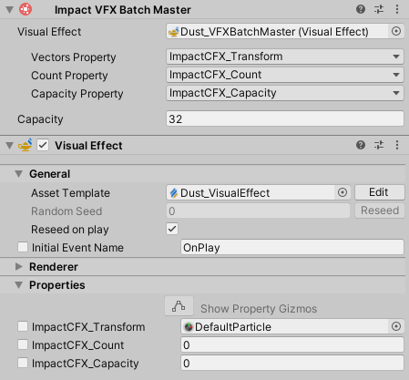
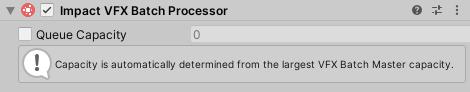

VFX Batch Effects
The VFX Batch Effect is a special kind of effect used to play particle effects using Unity's Visual Effect system.
Rather than using an object pool consisting of many object instances, which can cause significant overhead especially with Visual Effects, VFX Batch Effects are based on a technique that uses a single "Master" visual effect to show particles at many positions at once. This takes advantage of the Visual Effect system's ability to efficiently handle many thousands of particles.
You can download the VFX Batch Effect package below.
Impact CFX Version: 1.4.1+
VFX Graph Version: 12.1.10+
You will also need to make sure you have the Visual Effect Graph package installed in the Package Manager.
Once you have imported the package, you can create a new VFX Batch Effect by going to .
VFX Batch Effects have the following properties:
- Visual Effect Prefab – The prefab for the visual effect that will be used.
- Visual Effect Type – The kind of visual effect.
- One Shot – A one-shot effect good for single collisions.
- Looped – Looped particles good for sliding or rolling effects.
- Emit On Slide – Should particles be displayed when sliding?
- Emit On Roll – Should particles be displayed when rolling?
- Minimum Velocity – The minimum collision velocity required for then particle effect to be shown.
- Collision Normal Influence – How much the collision normal will effect the calculated intensity of the collision.
VFX Batch Master
VFX Batch Effects require a prefab with an Impact VFX Batch Master component attached to it You can add this script to your prefab by going to .
Impact VFX Batch Masters have the following properties:
- Visual Effect – The Visual Effect component that is being controlled.
- Vectors Property – The Texture property of the Visual Effect that will be used to input position, normal, and velocity information.
- Count Property – The Integer property of the Visual Effect that will be used to input the number of effects that are currently playing.
- Capacity Property – The Integer property of the Visual Effect that will be used to input the total capacity of the effect.
- Capacity – How many effects can be processed in a single frame.
Creating a Visual Effect
Creating a visual effect that is compatible with VFX Batch Effect requires some extra set-up in the Visual Effect Graph.
First, you will need to add 3 properties to your visual effect graph:
- Vectors (Texture 2D) – Inputs position, normal, and velocity vectors.
- Count (Int) – Inputs the number of effects being displayed in a frame.
- Capacity (Int) – How many effects can be processed in a single frame.
These properties can be named anything you like, you will be able to select them in the VFX Batch Master component.
Next, you will need to add an Impact CFX VFX Batch Subgraph to your visual effect.
This subgraph takes the 3 input properties created above and extracts the following values from them:
- Position – The position of the effect contact point.
- Normal – The normal of the collision surface.
- Velocity – The velocity of the collision.
- Composition – The influence of the material at the contact point.
Finally, you will need to plug in the values into your visual effect's systems. There are 2 requirements here:
- The Position output of the Impact CFX VFX Batch Subgraph must be connected to a Set Position block in Initialize Particle. This will make sure the particle is spawned at the correct position.
- The Count property of your visual effect must be hooked up to the Count of your spawn system. You can multiply the Count by the number of particles you want to spawn at a single position.
Here is an example of how this is set up:
The Normal, Velocity, and Composition outputs are optional and can be used in any way you see fit. For example, you can use the Normal to set the velocity of the particles for a directional effect:
VFX Batch Effect Processor 
The VFX Batch Effect Processor is responsible for handling all VFX Batch Effects at runtime.
You can create this component by going to . Make sure that you add this processor to the Impact Effect Processors list on your Impact CFX Manager
The Queue Capacity property defines how many VFX Batch Effects the processor can process in a single frame. This is automatically set based on the largest VFX Batch Master capacity, but you can override it if you wish.